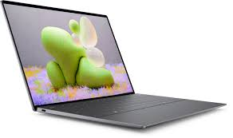
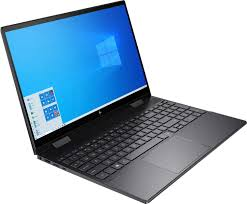
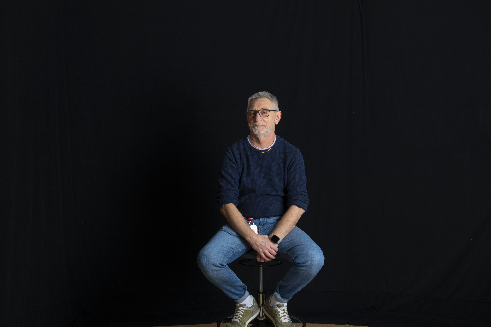

Produktinformasjon:
Utforsk vårt utvalg av førsteklasses bærbare laptoper. Oppdag hvordan den riktige laptopen kan forbedre din arbeidseffektivitet og gi en profesjonell touch til dine prosjekter, samtidig som den enkelt håndterer arbeidsoppgaver og underholdning.
Når du skal kjøpe en bærbar laptop er det viktig å tenke på hva du skal bruke den til. Om du skal bruke den til å jobbe, er det viktig å ha en god prosessor og en stor skjerm. For underholdning, bør du vurdere en laptop med høyoppløselig skjerm og god grafikkytelse. Men, hvorfor velge? Vi anbefaler en laptop som kan håndtere begge, med en god prosessor, stor skjerm og god grafikkytelse. Dette gir deg en laptop som kan brukes til både arbeid og underholdning.
Vi anbefaler følgende laptoper:
Om Lenovo ThinkPad X1 Carbon
Lenovo ThinkPad X1 Carbon er en av de beste bærbare laptoper på markedet. Den har en god prosessor, stor skjerm og god grafikkytelse. Den er også svært lett og er enkel å bruke. Vi anbefaler Lenovo ThinkPad X1 Carbon til alle som skal bruke en laptop til både arbeid og underholdning.
Om Dell XPS 13
Dell XPS 13 er en av de beste bærbare laptoper på markedet. Den har en god prosessor, stor skjerm og god grafikkytelse. Den er også svært lett og er enkel å bruke. Vi anbefaler Dell XPS 13 til alle som skal bruke en laptop til både arbeid og underholdning.
Om HP Envy x360
HP Envy x360 er en av de beste bærbare laptoper på markedet. Den har en god prosessor, stor skjerm og god grafikkytelse. Den er også svært lett og er enkel å bruke. Vi anbefaler HP Envy x360 til alle som skal bruke en laptop til både arbeid og underholdning.
HiTEK AS er et firma som ble startet i 2020 av vår daglig leder, Alf Viggo Torgalsbøen. Vi har siden starten vokst seg til å bli en av de ledende leverandørene av IT-produkter i Norge. Vårt mål er å gi våre kunder de beste produktene og tjenestene, samtidig som vi har en god pris. Vi har en stor erfaring med å levere produkter til privatpersoner og bedrifter, og vi har en god kundeservice.
Alf Viggo Torgalsbøen
Daglig leder